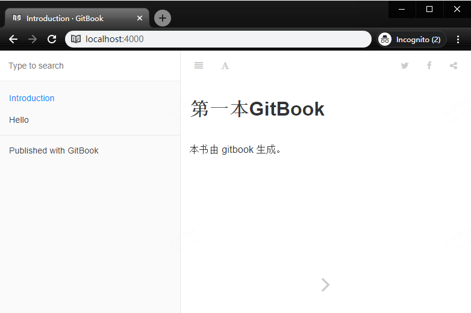

第一本电子书
基于上面的认识，可以用 gitbook 来制作第一本电子书。
初始化环境
现在，需要在一个空文件夹中创建自己的一本书。
首先，在该文件(D:\temp)下执行命令：
gitbook init
D:\temp>gitbook init
warn: no summary file in this book
info: create README.md
info: create SUMMARY.md
info: initialization is finished
自动创建了两个文件：
README.md 和 SUMMARY.md
添加说明到 README.md
# 第一本GitBook
本书由 gitbook 生成。
添加一个 markdown 文件
我新建了一个 hello.md 的文件，并写入如下内容。
# Hello World
### 欢迎语
欢迎你来到 GitBook 的世界，希望这里有你想要的东西。
添加菜单到 SUMMARY.md
# Summary
* [Introduction](README.md)
* [Hello](hello.md)
启动服务
在控制台输入命令：gitbook serve
D:\temp>gitbook serve
Live reload server started on port: 35729
Press CTRL+C to quit ...
info: 7 plugins are installed
info: loading plugin "livereload"... OK
info: loading plugin "highlight"... OK
info: loading plugin "search"... OK
info: loading plugin "lunr"... OK
info: loading plugin "sharing"... OK
info: loading plugin "fontsettings"... OK
info: loading plugin "theme-default"... OK
info: found 2 pages
info: found 4 asset files
info: >> generation finished with success in 0.6s !
Starting server ...
Serving book on http://localhost:4000
看到这样的输出，直接在浏览器访问 http://localhost:4000/

文件目录分析
现在去主文件夹(D:\temp)看可以看到新生成了一个文件夹 _book
.
├── _book
├── hello.md
├── README.md
└── SUMMARY.md
打开 文件夹 _book
.
├── gitbook
| ├── fonts
| ├── gitbook-plugin-fontsettings
| ├── gitbook-plugin-highlight
| ├── gitbook-plugin-livereload
| ├── gitbook-plugin-lunr
| ├── gitbook-plugin-search
| ├── gitbook-plugin-sharing
| ├── images
| ├── apple-touch-icon-precomposed-152.png
| └── favicon.ico
| ├── gitbook.js
| ├── style.css
| └── theme.js
├── hello.html
├── index.html
└── search_index.json
这个 文件夹 _book 中包含了点子书中的所有内容，将整个文件夹打包放在任何一个 web 服务器中，都能正常显示。
这是个非常简单的例子，之后通过 book.json的配置和插件的扩展，能实现更多个性化的功能。